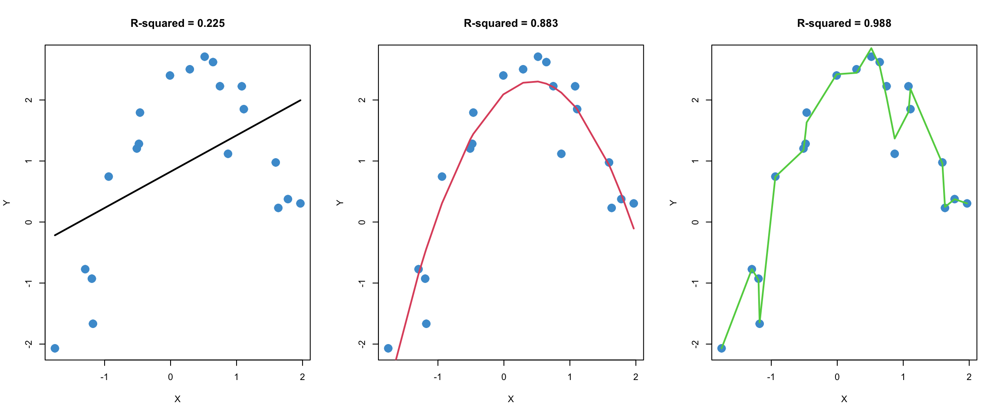

9 Polynomial regression, etc
This chapter will cover two widely-used techniques for addressing violations of the assumption of linearity:
- Polynomial regression, which means raising \(X\)-variables to a power (e.g., \(X^2\) and \(X^3\)), and
- Piecewise or segmented regression, which involves using different regression lines over different ranges of a predictor. These techniques involve transforming the \(X\)-variable(s), which can be done in addition to (or instead of) transforming the \(Y\) variable (see Chapter 8).
Both polynomial and piecewise regression are useful in practice and lead to advanced topics like splines and semi-parametric regression. They also turn out to be special cases of interactions, so we have already covered a lot of the technical details in Chapter 5 – phew!
9.1 Polynomial regression
Polynomial regression means that we regress \(Y\) on a polynomial function of \(X\):
\[ \widehat Y = b_0 + b_1 X + b_2 X^2 + b_3 X^3 + ....\]
Your first thought might be, “doesn’t this contradict the assumption that regression is linear?” The answer here is a bit subtle.
As with regular linear regression, the polynomial model is linear in the coefficients – we don’t raise the regression coefficients to a power (e.g., \(b_1^2\)), or multiply coefficients together (e.g, \(b_1 \times b_2\)). This is the technical sense in which polynomial regression is still just linear regression, despite its name.
Polynomial regression does use nonlinear functions of the predictor(s), but the model is agnostic to what you do with your data. The situation here is a lot like when we worked with interactions in Chapter 5. In order to model interactions, we computed the product of two predictors and entered the product into the model as a third predictor. Well, \(X^2\) is the product of a predictor with itself, so, in this sense, the quadratic term in a polynomial regression is just a special case of an interaction between two variables.
Although we did not cover interactions among more than two variables in this course, they are computed in the same way – e.g., a “three-way” interaction is just the product of 3 predictors. Similarly, \(X^3\) is just the three-fold product of a variable with itself.
While polynomial regression is formally similar to interactions, it is used for a different purpose. Interactions address how the relationship between two variables changes as a function of a third. Their inclusion in a model is usually motivated by a specific research question that is formulated before doing the data analysis (see Chapter 6).
By contrast, polynomial regression is used to address a non-linear relationship between \(Y\) and \(X\), and is usually motivated by a preliminary examination of data that indicates the presence of such a relationship (e.g., a scatter plot of \(Y\) versus \(X\); a residual versus fitted plot). While it is possible to formulate research questions about polynomial terms in a regression model, this is not necessarily or even usually the case when polynomial regression is used – often its just used to address violations of the linearity assumption.
9.1.1 Recap of polynomials
In general, a polynomial of degree \(n\) (i.e., highest power of \(n\)) produces a curve that can have up to \(n-1\) bends (minima and maxima). Some examples are illustrated in Figure @ref(fig:poly) below.
- The (orange) linear function of \(X\) is a polynomial of degree 1 and has zero bends.
- The (green) quadratic function of \(X\) is a polynomial of degree 2 and has 1 bend (a minimum at \(X = 0\); this is also called a parabola).
- etc.
As we can see, this is a very flexible approach to capturing non-linear relationships between two variables. In fact, it can be too flexible! This is the topic of the next section.
9.1.2 “Over-fitting” the data
Figure 9.1 shows three different regression models fitted to the same (simulated) bivariate data.
In the left panel, a standard linear regression model is used, and we can see that the model does not capture the nonlinear (quadratic) trend in the data.
The middle panel uses a quadratic model (i.e., includes \(X^2\) as a predictor, as well as \(X\)), and fits the data quite well.
The right panel uses a 16-degree polynomial to fit the data. We can see that is has a higher R-squared than the quadratic model. But there is also something fishy about this model, don’t you agree?

To help compare these three models, let’s simulate a second sample from the same population. In the plots below, the regression lines from Figure 9.1 were added to the plots from a second sample. Note that the regression parameters were not re-estimated using the second data set. The model parameters from the first data set were used to produce the regression lines for the second data set, so the regression lines are the same as in Figure 9.1.
This procedure, which is called out-of-sample-prediction or cross-validation, is one widely used method for comparing the quality of predictions from different models. The R-squared values of the different models in the second sample are provided to help summarize the quality of predictions.
We will talk more about this example in class. Before moving on, please take a moment to write down your intuitions about what is going in Figure 9.1 and Figure 9.2. In particular, you might consider whether the model in the right-hand panel is better than the one in the middle panel. I will ask you to share your thoughts in class.
9.1.3 Interpreting the model
As mentioned, polynomial terms are often added into a model as a way to address nonlinearity. When this is the case, the polynomial terms themselves are not necessarily of substantive interest – they can be added just to “patch up” the model after assumption checking.
We saw an example of this in Section 6.2. In that example, linear and quadratic terms for SES were entered into the model in the first block. The R-squared was interpreted for the entire block, but the interpretation of the regression coefficient for the quadratic term was not addressed. This is a pretty common way of using polynomial regression – the polynomial terms are included so that the model assumptions (linearity) are met, but they are not necessarily interpreted beyond this.
However, we can interpret the regression slopes on the polynomial terms if we want to. This section addresses the interpretation of quadratic polynomials, which have the equation:
\[ \widehat Y = b_0 +b_1X + b_2X^2.\]
A similar approach applies to models with higher-order terms as well (cubics, etc.).
Let’s start with a classic example of a quadratic relationship: the Yerkes-Dodson law relating physiological arousal (“stress”) to task performance, which is represented in Figure 9.3. One way to interpret the law is in terms of the overall shape of the relationship. As stress goes up, so does performance – but only up to a point, after which more stress leads to a deterioration in performance.
The overall shape of the trend depends on only the sign of the regression slope on the quadratic term:
A U-shaped curve corresponds to a positive regression coefficient on \(X^2\) (think of a parabola from high school math)
An inverted-U-shaped curve corresponds to a negative regression coefficient on \(X^2\)
Beyond the overall shape of the relationship, we might also want to know what level of stress corresponds to the “optimal” level of performance – i.e., where the maximum of the curve is. This exemplifies a more complicated interpretation of a quadratic relationship, and it requires some calculus (see Section 9.1.4, which is optional). The value of \(X\) that corresponds to the maximum (or minumum) of the quadratic curve is
\[ X = \frac{-b_1}{2 b_2}. \tag{9.1}\]
Based on this discussion, please answer the following questions bout the Yerkes-Dodson Law, using the following model parameters. Make sure to explain how you know the answer!
\[ \widehat Y = 20 + 1 X - 2X^2.\]
What is the overall shape of the relationship: U or inverted-U?
What is the value of stress at which predicted performance reaches a maximum?
Bonus: what is the maximum value of predicted performance?
9.1.4 Analysing polynomials*
This sections shows how we get Equation 9.1 and some related details. Recall from intro calculus that the extrema (i.e., minima and maxima) of a function occur when the derivative of the function is equal to zero. The derivative of the quadratic regression equation is
\[ \frac{d}{dX} \hat Y = \frac{d}{dX} (b_0 + b_1X + b_2X^2) = b_1 + 2b_2X. \]
Setting the derivative to zero \[ b_1 + 2b_2X = 0 \]
and solving for \(X\)
\[ X = -\frac{b_1}{2b_2} \]
gives the value of \(X\) at which the \(\hat Y\) reaches its minimum (or maximum) value. Let’s call this value of \(X^*\). Plugging \(X^*\) into the original equation tells us the minimum (or maximum) of \(\hat Y\).
We can use the second derivative rule to determine whether \(X^*\) is a minimum or maximum of \(\hat Y\).
\[ \frac{d^2}{dX^2} \hat Y = \frac{d}{dX} (b_1 + 2b_2X) = 2b_2 \]
If this value is positive (i.e., if \(b_2 >0\)), then the second derivative rule tells that \(X^*\) is minimum, hence the curve is “U-shaped”. If the value is negative (i.e., if \(b_2 < 0\)) then its a maximum, and hence the curve is “inverted-U-shaped”.
9.1.5 Model building vs curve fitting
Up to this point, we have discussed the use and interpretation of polynomials. In this section we consider how to build polynomial regression models in practice.
A typical model-building process for polynomial regression might proceed as follows.
Enter just the linear terms into the model and examine a residual versus fitted plot.
If there is evidence of non-linearity, look at the scatter plots between the outcome variable and each individual predictor to make a guess about which predictor(s) may be causing the non-linearity.
Add a quadratic term for a predictor of interest and examine whether there is a statistically significant increase in R-squared (see Section 6.1.4). If there is, you have found a source of non-linearity! If not, the quadratic term is not explaining variance in the outcome variable, so you can remove it from the model.
Keep adding polynomial terms (quadratic terms for other predictors; higher-order terms for the same predictor) one at a time until the model assumptions looks reasonable. This might take a bit of trial and error.
This overall approach is illustrated in the next section. However, there are a couple of important points to mention first.
Making good use of polynomial regression requires walking a fine line between curve-fitting and theory-based modeling (see Figure 9.1). Sometimes, adding polynomial terms can provide an elegant and intuitive interpretation of the relationship between two variables. But, if you find yourself adding more than a couple of polynomial terms into a model and still have unresolved issues with nonlinearity, it is probably best to consider another approach (such as piecewise regression, coming up in Section 9.3)
Just like with interactions, higher-order polynomial terms are often highly correlated with lower-order terms (e.g., if \(X\) takes on strictly positive values, \(X\) and \(X^2\) will be highly correlated). Recall that if two predictors are highly correlated, this can affect their regression coefficients (Section 3.4) as well as their standard errors (Section 6.3). In the context of polynomial regression, there are a couple of things that can be done about this.
Interpret \(\Delta R^2\) values rather than the individual regression coefficients and their \(p\)-values. This is the easiest thing to do, conceptually.
Use “orthogonal polynomials”, which are designed to ensure the different polynomial terms for the same predictor are uncorrelated (orthogonal just means uncorrelated). The result of this approach is that numerical values of the regression coefficients are not directly interpretable beyond their sign, but the t-tests of the regression coefficients can be interpreted as testing the \(\Delta R^2\) for each term in the polynomial. This is conceptually more complicated than first option, but leads to the same overall conclusions.
Both approaches are illustrated in the next section.
9.2 Worked Example
In Section 8.6 we saw that applying a log-transform to the Wages.Rdata example addressed non-normality of the residuals but did not do much to address nonlinearity. The summary output and diagnostic plots for the log-linear regression of wages on education are presented again below. We will go through this example in class together, so please note any questions you have about the procedures or their interpretation and be prepared to ask them in class.
Code
# Load the data and take a look
load("Wages.RData")
attach(wages)
# Create log transform of wage
log_wage <- log(wage + 1)
# Regress log_wages on educ
mod1 <- lm(log_wage ~ educ)
# Check out model fit
par(mfrow = c(1,2))
plot(educ, log_wage, col = "#4B9CD3")
abline(mod1)
plot(mod1, 1, col = "#4B9CD3")
Code
summary(mod1)
Call:
lm(formula = log_wage ~ educ)
Residuals:
Min 1Q Median 3Q Max
-1.07475 -0.35961 0.02614 0.31244 1.18163
Coefficients:
Estimate Std. Error t value Pr(>|t|)
(Intercept) 1.188730 0.102328 11.62 <2e-16 ***
educ 0.074802 0.007263 10.30 <2e-16 ***
---
Signif. codes: 0 '***' 0.001 '**' 0.01 '*' 0.05 '.' 0.1 ' ' 1
Residual standard error: 0.4234 on 398 degrees of freedom
Multiple R-squared: 0.2104, Adjusted R-squared: 0.2085
F-statistic: 106.1 on 1 and 398 DF, p-value: < 2.2e-16Because there is one prominent bend in our residual vs fitted plot (at \(\hat Y \approx 2.1\)), let’s see if adding a quadratic term to the model can improve the model fit.
The poly function in R makes it easy to do polynomial regression, without having to hard-code new variables like educ^2 into our dataset. In the summary output below, poly(...)n denote’s the \(n\)-th term in the polynomial. The diagnostic plots for the log-linear model with a quadratic term are also shown below.
Code
mod2 <- lm(log_wage ~ poly(educ, 2, raw = T))
par(mfrow = c(1,2))
plot(educ, log_wage, col = "#4B9CD3")
# To plot the trend we need to we first need to order the data and the predicted values ...
sort_educ <- educ[order(educ)]
sort_fitted<- fitted(mod2)[order(educ)]
points(sort_educ, sort_fitted, type = "l")
plot(mod2, 1, col = "#4B9CD3")
Code
summary(mod2)
Call:
lm(formula = log_wage ~ poly(educ, 2, raw = T))
Residuals:
Min 1Q Median 3Q Max
-1.04723 -0.38939 0.01877 0.31820 1.14129
Coefficients:
Estimate Std. Error t value Pr(>|t|)
(Intercept) 1.862958 0.406587 4.582 6.18e-06 ***
poly(educ, 2, raw = T)1 -0.031492 0.062468 -0.504 0.6144
poly(educ, 2, raw = T)2 0.003985 0.002326 1.713 0.0875 .
---
Signif. codes: 0 '***' 0.001 '**' 0.01 '*' 0.05 '.' 0.1 ' ' 1
Residual standard error: 0.4224 on 397 degrees of freedom
Multiple R-squared: 0.2162, Adjusted R-squared: 0.2123
F-statistic: 54.77 on 2 and 397 DF, p-value: < 2.2e-16Writing the R output in terms of the regression model, we have:
\[ \widehat{\log(WAGES)} = 1.862958 - 0.031492 (EDUC) + 0.003985 (EDUC)^2.\]
Let’s start by interpreting the plots. Based on the left-hand panel, it looks like a quadratic relationship provides a reasonable representation of the data. Based on the right-hand panel, I would conclude that the apparent non-linearity in the residual vs fitted plot has been sufficiently reduced. There is still a blip at \(\hat Y = 2.3\), but there are 5 data points there so I am not to worried about it.
Turning to the summary output, there are three main take-aways:
As discussed in the previous section, the sign of the quadratic term tells us something about the overall shape of the relationship (do you remember what that is?). However, interpreting the numerical values of the regression coefficients in a polynomial regression is not always useful. For example, using the approach to interpreting quadratic regression from Section 9.1.3, it turns out that the minimum predicted wages occur for someone with 3.95 years of education. The lowest level of education in the sample is 6 years, so this interpretation isn’t super relevant for our example. Consequently, rather than focusing on the interpretation of the regression coefficients, it is often sufficient to focus on whether the two predictors (i.e., \(EDUC\) and \(EDUC^2\)) together explained a significant proportion of variation in the outcome variable. This information is provided by the R-squared statistic and the F-test of R-squared in the summary output above.
There are two ways to test whether the addition of the quadratic term (
poly(educ, 2)2 = 0.003985) improves the model. First, we can examine its test of significance. This test tells us that, controlling for the linear relationship between log-wages and education, the quadratic term is statistically significant at the .1 level (it is not statistically significant at the .05 level). Recall from Chapter 7 that this same information could be obtained by setting up a heirarhical model (Block 1 = linear term; Block 2 = quadratic term) and testing the change in R-squared. For the example, the F-test of R-squared change is
Code
anova(mod1, mod2)Analysis of Variance Table
Model 1: log_wage ~ educ
Model 2: log_wage ~ poly(educ, 2, raw = T)
Res.Df RSS Df Sum of Sq F Pr(>F)
1 398 71.363
2 397 70.840 1 0.52368 2.9348 0.08747 .
---
Signif. codes: 0 '***' 0.001 '**' 0.01 '*' 0.05 '.' 0.1 ' ' 1Note that the p-value is exactly the same as the t-test of regression coefficient reported above. In both cases, it seems that we don’t really need the quadratic term, based on the .05 level of significance (more on this Section 9.3)
- Finally, compared to the model without the quadratic term, we can see the linear term (
poly(educ, 2)1 = - 0.031492) is now longer statistically significant. This can happen when we add higher order terms into a model. In this example, the linear and quadratic terms are highly correlated (the correlation is over .99 in the example!). Due to this correlation, the linear terms is not statistically significant, and the quadratic term is only “marginally” significant, even though the F-test of R-squared in the summary output is fatalistically significant with \(p < .001\). In the next section, we will see how to avoid this issue of having highly correlated predictors in polynomial regression.
** If you have any questions about the interpretation of the model results discussed in this section, please list them now and I will be happy to address the in class.**
9.2.1 Orthogonal polynomails*
Before moving on, a quick (and optional) note on orthogonal vs. raw polynomials. Orthogonal polynomials are the default approach in R, and they make life easier, so they are worth knowing about.
When using orthogonal polynomials, the different polynomial terms (e.g., \(X, X^2, X^3\)) are transformed so that they are uncorrelated. This means that the \(t\)-test of each regression coefficient can be interpreted as testing the proportion of variance associated uniquely with that term of the polynomial. Basically, using orthogonal polynomials means that we don’t need to do the model building stuff (e.g., sequential blocks, adding in each term one at a time)– it’s already built into the coefficients.
The downside of orthogonal polynomials is that, beyond their sign, the regression coefficients are complicated to interpret. But, these coefficients aren’t easy to interpret anyway, and we often don’t care much about their exact values. If you are in a situation where you don’t really care about the interpretation of the coefficients beyond the overall shape of the relationship, the orthogonal polynomials are definitely a good choice!
The use of orthogonal polynomials is illustrated below. You’ll see that most of the output is the same as in the previous section, except the numerical value and associated tests of the regression coefficients in the summary table. In particular, the linear trend is statistically significant in the output below, because it is no longer correlated with the quadratic trend. In fact the t-test and p-value are exactly the same as the first model we fit to our example data above (the model with just the linear trend, and no quadratic trend).
In summary, orthogonal polynomials provide a shortcut to hierarchical model buiding with polynomials. By transforming the data so that the different terms of the polynomial are uncorrelated, we get the similar information from a single model using orthogonal polynomials as we would if we fitted a series of hierarchical models, adding each additional term into the model one at a time.
Code
mod2a <- lm(log_wage ~ poly(educ, 2, raw = F))
par(mfrow = c(1,2))
plot(educ, log_wage, col = "#4B9CD3")
# To plot the trend we need to we first need to order the data and the predicted values ...
sort_educ <- educ[order(educ)]
sort_fitted <- fitted(mod2a)[order(educ)]
points(sort_educ, sort_fitted, type = "l")
plot(mod2a, 1, col = "#4B9CD3")Code
summary(mod2a)
Call:
lm(formula = log_wage ~ poly(educ, 2, raw = F))
Residuals:
Min 1Q Median 3Q Max
-1.04723 -0.38939 0.01877 0.31820 1.14129
Coefficients:
Estimate Std. Error t value Pr(>|t|)
(Intercept) 2.21987 0.02112 105.103 <2e-16 ***
poly(educ, 2, raw = F)1 4.36133 0.42242 10.325 <2e-16 ***
poly(educ, 2, raw = F)2 0.72366 0.42242 1.713 0.0875 .
---
Signif. codes: 0 '***' 0.001 '**' 0.01 '*' 0.05 '.' 0.1 ' ' 1
Residual standard error: 0.4224 on 397 degrees of freedom
Multiple R-squared: 0.2162, Adjusted R-squared: 0.2123
F-statistic: 54.77 on 2 and 397 DF, p-value: < 2.2e-16To find out more, use help(poly). A good discussion of this point is also available on StatExchange: https://stats.stackexchange.com/questions/258307/raw-or-orthogonal-polynomial-regression?r=SearchResults&s=2%7C87.5473
9.2.2 Summary
This section has addressed how to use, interpret, and implement polynomial regression. Some key points:
We don’t want to overfit the data by adding too many higher-order terms. If a quadratic or cubic polynomial doesn’t sort out any issues with linearity (as diagnosed by the residual vs fitted plots), then you probably want to try something else (see next section).
Often the overall shape of a polynomial regression is of interest. This is communicated by the sign of the regression slopes on the higher-order terms. However we aren’t interested in a more specific interpretation of the regression slopes – it can be done (#sec-interpreting-the-model-9), but it is not very common.
Instead, we usually approach polynomial regression from the perspective of hierarchical model building – if the higher order terms lead to a significant increase in the variance explained (i.e., R-squared change), we keep them in the model.
Orthogonal polynomials provide a shortcut to doing heirarhical model building with polynomials. The make our life easier, but they aren’t doing anything different than the hierarchical.
In the worked example, it turned out that despite the apparent issue with linearity in the original model, and despite the apparently better fit of the quadratic model in terms of linearity, the statistical tests actually suggested we don’t need the quadratic term (using \(\alpha = .05\)). The next example provides another perspective on this modelling issue.
9.3 Piecewise regression
Piecewise or segmented regression is another approach to dealing with nonlinearity. Like polynomial regression, it is mathematically similar to interaction. Also like polynomial regression, it has a special interpretation and application that make it practically distinct from interaction.
In the simplest case, piecewise regression involves interacting a predictor variable with a binary re-coding of itself. To illustrate how the approach works, let’s again consider our wages and education example. The scatter plot of log-wages versus education is presented again below for reference.
Consider the following reasoning about the example:
For people with 12 or less years of education (i.e., who did not obtain post-secondary education) the apparent relationship with wage is quite weak. This seems plausible, because if a job doesn’t require a college degree, education probably isn’t a big factor in determining wages.
For people with more than 12 years of education, the relationship with wage seems to be stronger. This also seems plausible: for jobs that require post secondary education, more education is usually associated with higher wages.
To restate this as an interaction: the relationship between wage and education appears different for people who have a post-secondary education versus those who do not.
To represent this reasoning visually we can modify Figure 9.4 as shown in Figure 9.5. This captures the basic idea behind piecewise regression – we have different regression lines over different ranges of the predictor, and the overall regression is piecewise or segmented. The next section shows how to build this model.
9.3.1 The piecewise model
We have reasoned that the relationship between wages and education might depend on whether people have post-secondary education. We also noted that this sounds a lot like an interaction (because it is!), which is the basic approach we can use to create piecewise models.
In order to run our piecewise regression, first we need to create a dummy-coded version of education that indicates whether a person had more than 12 years education:
\[ EDUC_{12} = \left\{ \begin{matrix} 1 & \text{if } EDUC > 12\\ 0 & \text{if } EDUC \leq 12 \end{matrix} \right. \]
Then, we enter the original variable, the dummy-coded indicator, and their interaction into the model:
\[ \widehat{\log(WAGES)} = b_0 + b_1 (EDUC) + b_2 (EDUC_{12}) + b_3 (EDUC \times EDUC_{12}) \]
As we can see, the resulting model is a special case of an interaction between a continuous predictor (\(EDUC\)) and binary predictor (\(EDUC_{12}\)).
While the above model conveys the overall idea of piecewise regression, there are also more complex approaches that will search for breakpoints, smoothly connect the lines at the breakpoints, use nonlinear functions (e.g., polynomials) for the segments, etc. We won’t cover these more complex approaches here, but check out the following resource if you are interested and feel free to ask questions in class: https://rpubs.com/MarkusLoew/12164
9.3.2 Back to the example
The output for the example is provided below. Following the output, some questions are posed about the interpretation of the model.
- Diagnostic plots for the piecewise model:

- Summary output and estimated model (the model doesn’t fit nicely on one line!):
Code
summary(mod4)
Call:
lm(formula = log_wage ~ educ * educ12)
Residuals:
Min 1Q Median 3Q Max
-0.98101 -0.36398 0.02055 0.30687 1.10305
Coefficients:
Estimate Std. Error t value Pr(>|t|)
(Intercept) 1.78426 0.23531 7.583 2.43e-13 ***
educ 0.01736 0.02159 0.804 0.4219
educ12 -0.64255 0.35573 -1.806 0.0716 .
educ:educ12 0.06144 0.02737 2.245 0.0253 *
---
Signif. codes: 0 '***' 0.001 '**' 0.01 '*' 0.05 '.' 0.1 ' ' 1
Residual standard error: 0.4203 on 396 degrees of freedom
Multiple R-squared: 0.2261, Adjusted R-squared: 0.2202
F-statistic: 38.56 on 3 and 396 DF, p-value: < 2.2e-16\[ \begin{align} \widehat{\log(WAGES)} = & 1.78426 + 0.01736 (EDUC) \\ & - 0.64255 (EDUC_{12}) + 0.06144 (EDUC \times EDUC_{12}) \end{align} \]
- Simple trends using of the
emtrendsfunction (see Section 5.4).
Code
emmeans::emtrends(mod4, specs = "educ12", var = "educ") educ12 educ.trend SE df lower.CL upper.CL
0 0.0174 0.0216 396 -0.0251 0.0598
1 0.0788 0.0168 396 0.0457 0.1119
Confidence level used: 0.95 We will discuss this model together in class. It should feel a lot like deja vu from Chapter 5, but even more complicated due to the interpretation of \(EDUC_{12}\) and the fact that the outcome is log-transformed. Fun!!! I’ll ask questions below in class:
Note that the intercept and main effect of the binary variable educ12 are not of much interest in this application.
Using the 2-step approach from Section 5.3, please take a moment to work out the interpretation of main effect on \(EDUC\) \(b_1 = 0.01736\) and the interaction \(b_3 = 0.06144\) in the model above. It might help to draw a plot like Figure 9.5 and label it accordingly. (The interpretation of \(b_0\) and \(b_2\) is not very interesting but you can work them out too if you like.)
Please take a moment to write down your interpretation of the results of the piecewise regression, addressing the diagnostic plots, the parameter estimates, and the simple slopes.
9.3.3 Summary
Piecewise regression is another approach to dealing with nonlinearity. It can be especially powerful when we can conceptualize the nonlinearity in as an interaction between a variable and categorical encoding of itself (e.g., the relationship between years of education and wages depends on whether you went to college.) The overall interpretation and implementation of the model is also based on the material we already covered in Section 5.3, so take a look at the summary of that section for additional pointers.
9.4 Workbook
This section collects the questions asked in this chapter. The lessons for this chapter will focus on discussing these questions and then working on the exercises in Section 9.5. The lesson will not be a lecture that reviews all of the material in the chapter! So, if you haven’t written down / thought about the answers to these questions before class, the lesson will not be very useful for you. Please engage with each question by writing down one or more answers, asking clarifying questions about related material, posing follow up questions, etc.
- Please take a moment to write down your intuitions about what is going in Figure 9.1 and Figure 9.2. In particular, you might consider whether the model in the right-hand panel is better than the one in the middle panel. I will ask you to share your thoughts in class.
- Please answer the following questions bout the Yerkes-Dodson Law, using the following model parameters. Make sure to explain how you know the answer.
\[ \widehat Y = 20 + 1 X - 2X^2.\]
What is the overall shape of the relationship: U or inverted-U?
What is the value of stress at which predicted performance reaches a maximum?
Bonus: what is the maximum value of predicted performance?
- We will go through the example in class together, so please note any questions you have about the procedures or their interpretation and be prepared to ask them in class.
The output for the example is provided below. Following the output, some questions are posed about the interpretation of the model,
Diagnostic plots for the piecewise model:
- Summary output and estimated model:
Code
summary(mod4)
Call:
lm(formula = log_wage ~ educ * educ12)
Residuals:
Min 1Q Median 3Q Max
-0.98101 -0.36398 0.02055 0.30687 1.10305
Coefficients:
Estimate Std. Error t value Pr(>|t|)
(Intercept) 1.78426 0.23531 7.583 2.43e-13 ***
educ 0.01736 0.02159 0.804 0.4219
educ12 -0.64255 0.35573 -1.806 0.0716 .
educ:educ12 0.06144 0.02737 2.245 0.0253 *
---
Signif. codes: 0 '***' 0.001 '**' 0.01 '*' 0.05 '.' 0.1 ' ' 1
Residual standard error: 0.4203 on 396 degrees of freedom
Multiple R-squared: 0.2261, Adjusted R-squared: 0.2202
F-statistic: 38.56 on 3 and 396 DF, p-value: < 2.2e-16\[ \begin{align} \widehat{\log(WAGES)} = & 1.78426 + 0.01736 (EDUC) \\ & - 0.64255 (EDUC_{12}) + 0.06144 (EDUC \times EDUC_{12}) \end{align} \]
- Simple trends using of the
emtrendsfunction (see Section 5.4).
Code
emmeans::emtrends(mod4, specs = "educ12", var = "educ") educ12 educ.trend SE df lower.CL upper.CL
0 0.0174 0.0216 396 -0.0251 0.0598
1 0.0788 0.0168 396 0.0457 0.1119
Confidence level used: 0.95 Using the 2-step approach from Section 5.3, please take a moment to work out the interpretation of main effect on \(EDUC\) \(b_1 = 0.01736\) and the interaction \(b_3 = 0.06144\) in the model above. It might help to draw a plot like Figure 9.5 and label it accordingly. (The interpretation of \(b_0\) and \(b_2\) is not very interesting but you can work them out too if you like.)
Please take a moment to write down your interpretation of the results of the piecewise regression, addressing the diagnostic plots, the parameter estimates, and the simple slopes.
Code
# clean up!
detach(wages)9.5 Exercises
There isn’t much new in terms of R code in this chapter, but the workflows for the two types of model are pretty complicated so we review them here. You’ll see that some of the plots require a lot of fiddling about, especially for the piecewise regression model. We will cover some tricks and shortcuts for producing these types plots during the open lab sessions for Assignment 4. So don’t worry too much about the complicated-looking coded for the plots at this point!
We will go through this material in class together, so you don’t need to work on it before class (but you can if you want.) Before staring this section, you may find it useful to scroll to the top of the page, click on the “</> Code” menu, and select “Show All Code.”
9.5.1 Polynomial regression
Let’s start with the “Vanella” log-linear model for the wages examples
Code
# Load the data and take a look
load("Wages.RData")
attach(wages)
# Create log transform of wage
log_wage <- log(wage + 1)
# Regress it on educ
mod1 <- lm(log_wage ~ educ)
# Check out model fit
par(mfrow = c(1,2))
plot(educ, log_wage, col = "#4B9CD3")
abline(mod1)
plot(mod1, 1, col = "#4B9CD3")
Because there is one prominent bend in our residual vs fitted plot of the log-linear model (at \(\hat Y \approx 2.1\)), let’s see if adding a quadratic term to the model can improve the model fit.
The poly function in R makes it easy to do polynomial regression, without having to hard-code new variables like EDUC^2 into our dataset. This function automatically uses orthogonal (uncorrelated) polynomials, so we don’t have to worry about centering, either. The basic interpretation of the model coefficients in an orthogonal polynomial regression is the same as discussed in #sec-polynomial-9, but the “more complicated” interpretation of the model parameters is not straightforward. To find out more, use help(poly).
The diagnostic plots for the log-linear model with a quadratic term included for education is shown below, along with the model summary. In the output, poly(educ, 2)n is the \(n\)-th degree term in the polynomial. Orthogonal polynomials were used.
Code
# Regress log_wage on a quadratic function of eduction
mod2 <- lm(log_wage ~ poly(educ, 2))
# Model output
summary(mod2)
Call:
lm(formula = log_wage ~ poly(educ, 2))
Residuals:
Min 1Q Median 3Q Max
-1.04723 -0.38939 0.01877 0.31820 1.14129
Coefficients:
Estimate Std. Error t value Pr(>|t|)
(Intercept) 2.21987 0.02112 105.103 <2e-16 ***
poly(educ, 2)1 4.36133 0.42242 10.325 <2e-16 ***
poly(educ, 2)2 0.72366 0.42242 1.713 0.0875 .
---
Signif. codes: 0 '***' 0.001 '**' 0.01 '*' 0.05 '.' 0.1 ' ' 1
Residual standard error: 0.4224 on 397 degrees of freedom
Multiple R-squared: 0.2162, Adjusted R-squared: 0.2123
F-statistic: 54.77 on 2 and 397 DF, p-value: < 2.2e-16Code
# Diagnostic plots
par(mfrow = c(1,2))
# scatter plot with trend
plot(educ, log_wage, col = "#4B9CD3")
# order the data and the predicted values ...
sort_educ <- educ[order(educ)]
sort_fitted <- fitted(mod2)[order(educ)]
points(sort_educ, sort_fitted, type = "l")
# residual versus fitted
plot(mod2, 1, col = "#4B9CD3")
The F-test of R-squared change between the first and second models (not really required since we used orhtogonal polynomials, but for illustrative purposes):
Code
anova(mod1, mod2)Analysis of Variance Table
Model 1: log_wage ~ educ
Model 2: log_wage ~ poly(educ, 2)
Res.Df RSS Df Sum of Sq F Pr(>F)
1 398 71.363
2 397 70.840 1 0.52368 2.9348 0.08747 .
---
Signif. codes: 0 '***' 0.001 '**' 0.01 '*' 0.05 '.' 0.1 ' ' 1Illustrating the same overall approach for the cubic model:
Code
mod3 <- lm(log_wage ~ poly(educ, 3))
summary(mod3)
Call:
lm(formula = log_wage ~ poly(educ, 3))
Residuals:
Min 1Q Median 3Q Max
-1.0344 -0.3734 0.0203 0.3107 1.1612
Coefficients:
Estimate Std. Error t value Pr(>|t|)
(Intercept) 2.2199 0.0211 105.213 <2e-16 ***
poly(educ, 3)1 4.3613 0.4220 10.336 <2e-16 ***
poly(educ, 3)2 0.7237 0.4220 1.715 0.0871 .
poly(educ, 3)3 -0.5717 0.4220 -1.355 0.1763
---
Signif. codes: 0 '***' 0.001 '**' 0.01 '*' 0.05 '.' 0.1 ' ' 1
Residual standard error: 0.422 on 396 degrees of freedom
Multiple R-squared: 0.2199, Adjusted R-squared: 0.2139
F-statistic: 37.2 on 3 and 396 DF, p-value: < 2.2e-16Code
# Same plots as above, reusing variable names here
par(mfrow = c(1,2))
plot(educ, log_wage, col = "#4B9CD3")
sort_fitted <- fitted(mod3)[order(educ)]
points(sort_educ, sort_fitted, type = "l")
plot(mod3, 1, col = "#4B9CD3")Code
anova(mod1, mod2, mod3)Analysis of Variance Table
Model 1: log_wage ~ educ
Model 2: log_wage ~ poly(educ, 2)
Model 3: log_wage ~ poly(educ, 3)
Res.Df RSS Df Sum of Sq F Pr(>F)
1 398 71.363
2 397 70.840 1 0.52368 2.9410 0.08714 .
3 396 70.513 1 0.32682 1.8354 0.17626
---
Signif. codes: 0 '***' 0.001 '**' 0.01 '*' 0.05 '.' 0.1 ' ' 19.5.2 Write up
This section illustrates the write-up for the quadratic regression based on heirarhical modeling and based on orthogonal polynomials. In practice, just pick one of these.
Based on heirachical modeling. Starting with a model containing only the linear term, years of education explained about 21.6% of the variance in log-wages (\(R^2 = .216, F(2, 397) = 54.77, p < .001\)). Adding a quadratic term to address potential nonlinearity, it was found that only an additional .5% of variance was explained (\(\Delta R^2 = .005, F(1, 293) = 2.93, p = 0.088\)).
Based on orthogonal polynomials Regressing log wages on a second-degree orthogonal polynomial function of wages, it was found that the linear term was statistically significant at the .05 level (\(b = 4.36, t(396) = 10.33, p < .001\)), but the quadratic term was not (\(b = 0.72, t(396) = 1.71, p = 0.088\)).
9.5.3 Piecewise regression
Moving on, let’s consider the piecewise model from Section 9.3
Code
# Create a dummy variable indicating if education is at least 12 years or more
educ12 <- (educ > 12)*1
# Interact the dummy with educ
mod4 <- lm(log(wage + 1) ~ educ*educ12)
# The model output
summary(mod4)
Call:
lm(formula = log(wage + 1) ~ educ * educ12)
Residuals:
Min 1Q Median 3Q Max
-0.98101 -0.36398 0.02055 0.30687 1.10305
Coefficients:
Estimate Std. Error t value Pr(>|t|)
(Intercept) 1.78426 0.23531 7.583 2.43e-13 ***
educ 0.01736 0.02159 0.804 0.4219
educ12 -0.64255 0.35573 -1.806 0.0716 .
educ:educ12 0.06144 0.02737 2.245 0.0253 *
---
Signif. codes: 0 '***' 0.001 '**' 0.01 '*' 0.05 '.' 0.1 ' ' 1
Residual standard error: 0.4203 on 396 degrees of freedom
Multiple R-squared: 0.2261, Adjusted R-squared: 0.2202
F-statistic: 38.56 on 3 and 396 DF, p-value: < 2.2e-16Code
# The simple trends
trends <- emmeans::emtrends(mod4, specs = "educ12", var = "educ")
emmeans::test(trends) educ12 educ.trend SE df t.ratio p.value
0 0.0174 0.0216 396 0.804 0.4219
1 0.0788 0.0168 396 4.686 <.0001Code
# The diagnostic plots
par(mfrow = c(1, 2))
plot(mod4, 1, col = "#4B9CD3")
plot(mod4, 2, col = "#4B9CD3")
We can still see some evidence of heteroskedasticity in the residual versus fitted plot, so the last step is to use heteroskedasticity-corrected standard errors to ensure we are making the right conclusions about statistical significance
Code
## Make sure the required pacakges are installed
# install.packages("car")
# install.packages("lmtest")
# Step 1. Use "hccm" to get the HC SEs for our piecewise model
hcse <- car::hccm(mod4)
# Step 2. Use "coeftest" to compute t-tests with the HC SEs
lmtest::coeftest(mod4, hcse)
t test of coefficients:
Estimate Std. Error t value Pr(>|t|)
(Intercept) 1.784262 0.188861 9.4475 < 2e-16 ***
educ 0.017362 0.017859 0.9722 0.33156
educ12 -0.642555 0.323851 -1.9841 0.04793 *
educ:educ12 0.061436 0.024565 2.5010 0.01279 *
---
Signif. codes: 0 '***' 0.001 '**' 0.01 '*' 0.05 '.' 0.1 ' ' 1The next bit is optional. It shows how to produce the piecewise regression plot, which takes quite a bit of messing about with R…Let me know if you find an easier way to do this (in base R).
Code
# Building the piecewise regression plot -- yeeesh
# Add fitted values to dataset
wages$fitted <- fitted(mod4)
# Sort data on educ
wages <- wages[order(educ), ]
# Plot
par(mfrow = c(1, 1))
plot(educ, log(wage + 1), col = "#4B9CD3")
# Change color for the points with educ ≤ 12
with(subset(wages, educ <= 12), points(educ, log(wage + 1)))
# Plot the predicted values for educ > 12
with(subset(wages, educ > 12), lines(educ, fitted, col = "#4B9CD3"))
# Plot the predicted values for educ ≤ 12
with(subset(wages, educ <= 12), lines(educ, fitted))9.5.4 Write up
Using a piecewise regression model with heteroskedasticity consistent standard errors, it was found that the relationship between log-wages and years of education depended on whether a person attended post-secondary education (\(b = 0.061, t(396) = 2.50, p = .013\)). Using simple trends, it was found for people with 12 or less years of education, the relationship between log-wages and years of education was not significant (\(b = 0.017, t = (396) = .804, p = .42\)), whereas the relationship was significant for people with at least some post-secondary education (\(b = 0.078, t = (396) = 4.68, p < .001\)). The results indicate that, simply for those with some post-secondary education, each additional year of education was associated with a 8.1% increase in hourly wages (\(\exp(0.078) - 1 = .081\)). Due to a software limitation, the simple trends did not utlize heteroskedastic consistent standard errors.